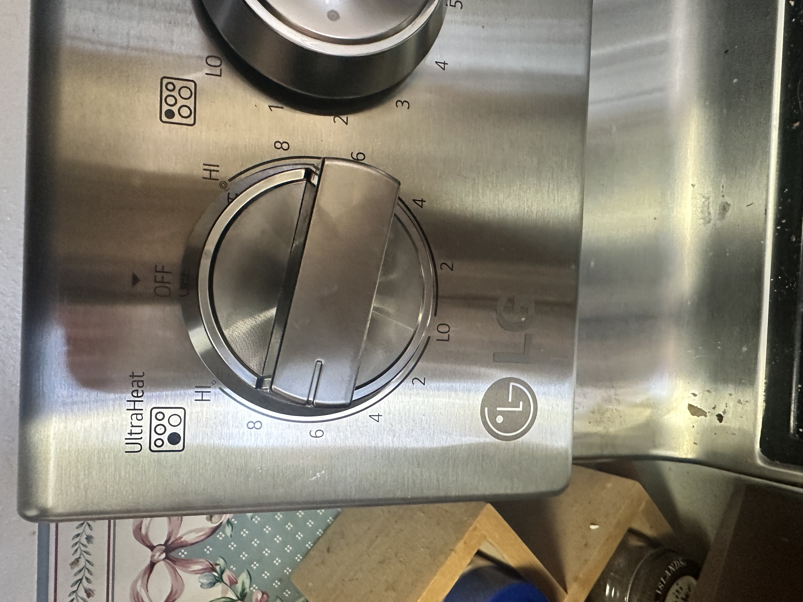
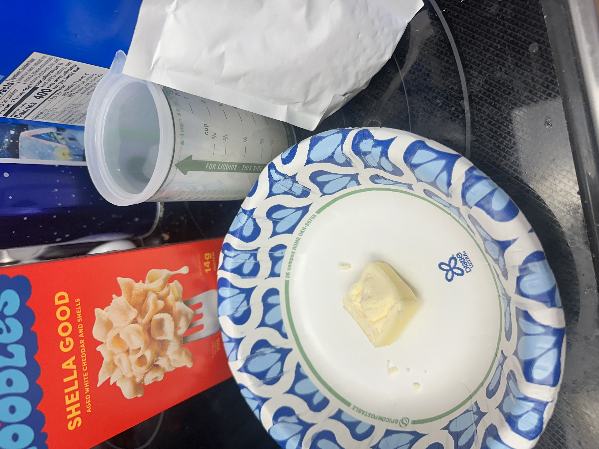
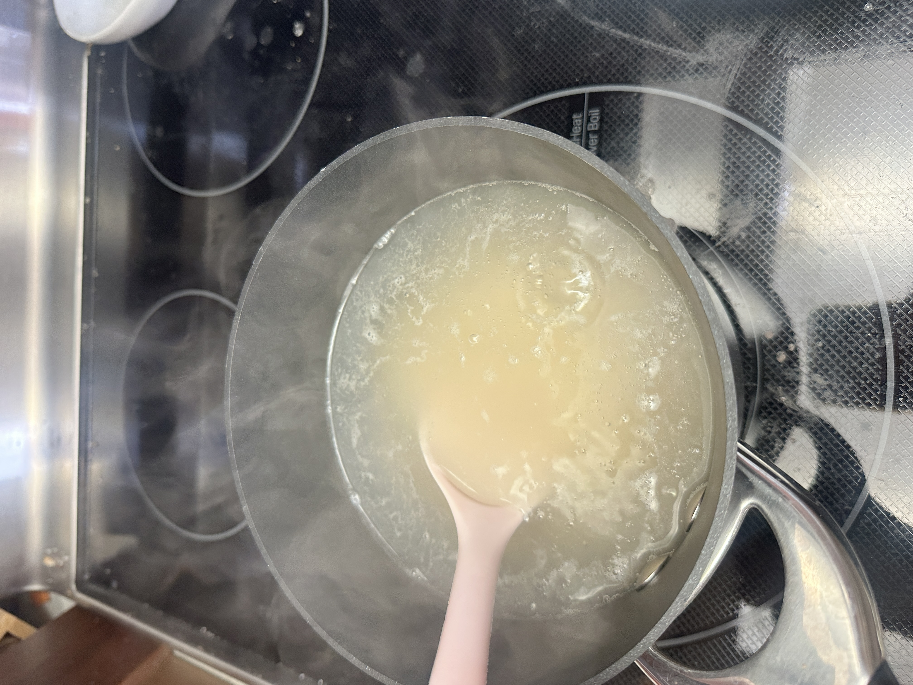
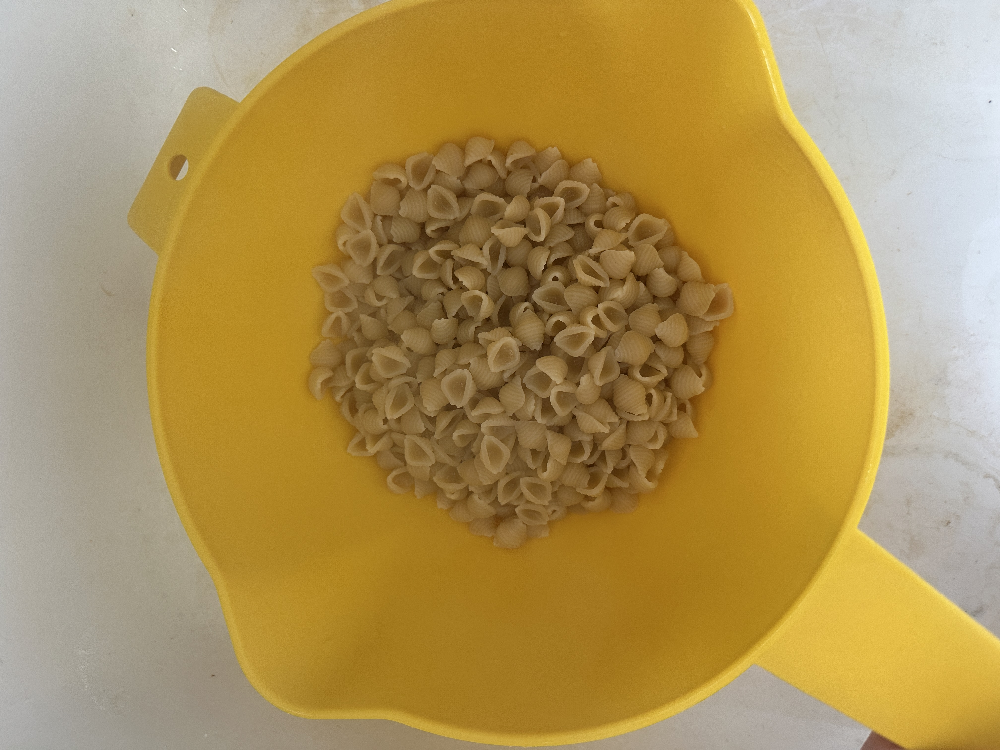
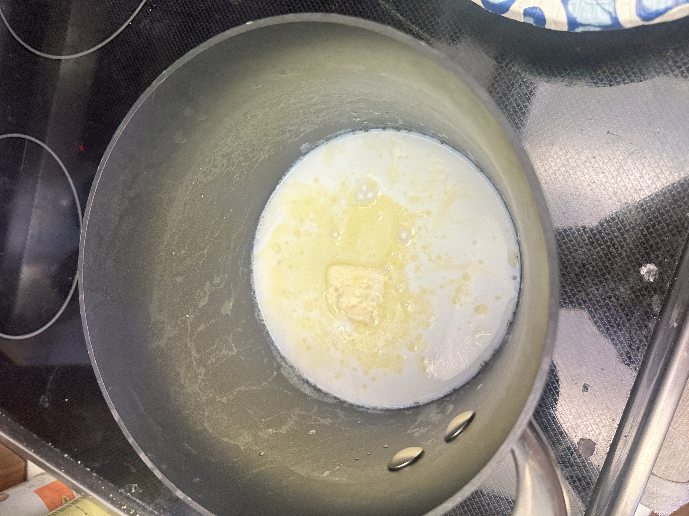
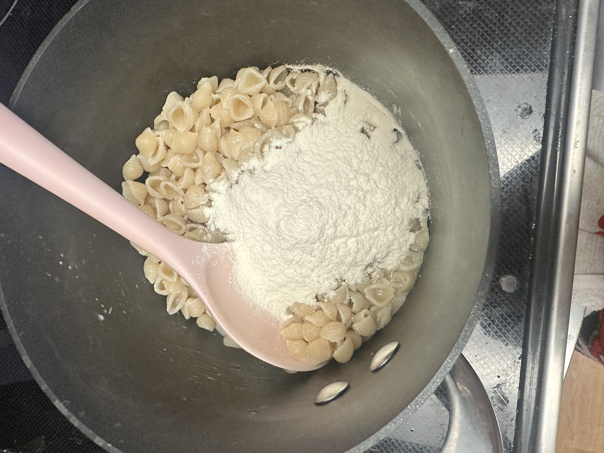
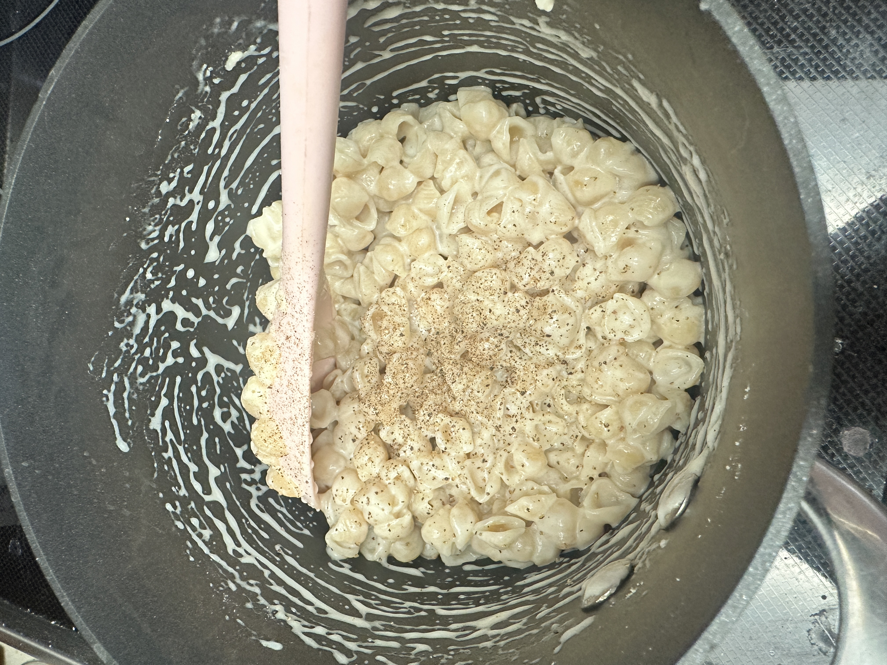
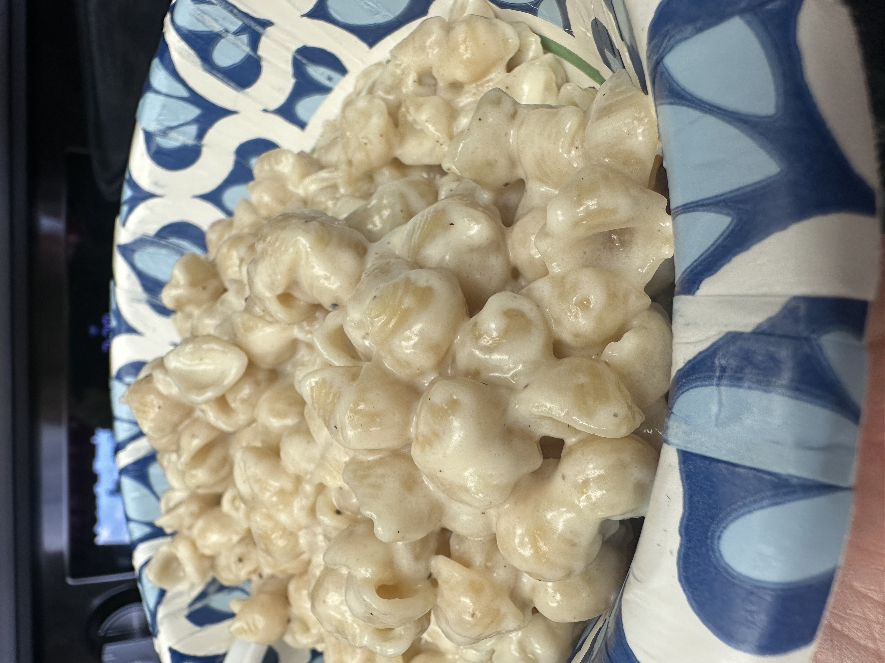

- Add 6 cups of water to a pot and set on med/high heat.


- While waiting for water to boil, gather your ingredients (milk, butter, mac
and cheese box, etc.)

- It's time to add your noodles once you see many bubbles rising in your water.

- Add your noodles and set a timer (should say on the back of the box how
long it should take, for mine it takes 11 minutes)

- Stir every few minutes to keep the noodles from sticking together or to
the pot.

- Once your timer goes off check your noodles.
- You can test this by taking out one noodle and making sure its doubled in size and by cutting it will the edge of a fork. If it is easily cuttable but not mushy your noodles should be good to go.
- Dump your noodles into a strainer and let them strain while you do the
next few steps.

- In your pot add the butter and allow it to melt all the
way or half way.
- I like to do about half way so the noodles melt it the rest of the way.

- Add your milk and slightly stir together. This will mix your melted butter and milk.

- Shake out any excess water from your noodles
and add them to the pot.

- Stir up contents so the noodles are covered in the
butter and milk mix.
- Add your cheese mix and mix until creamy.


- Add any seasonings you'd like. I like to add some
pepper to my mac and cheese.

- Serve it up and enjoy.
